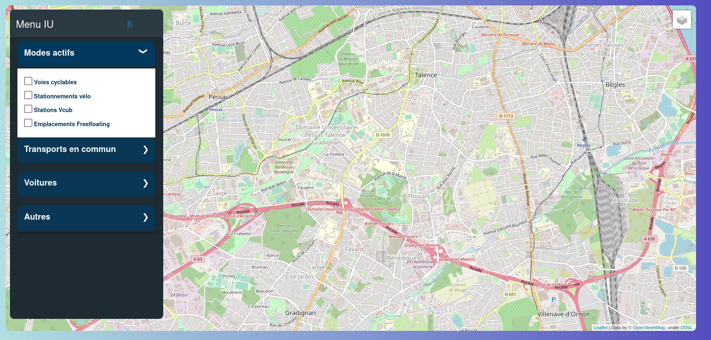
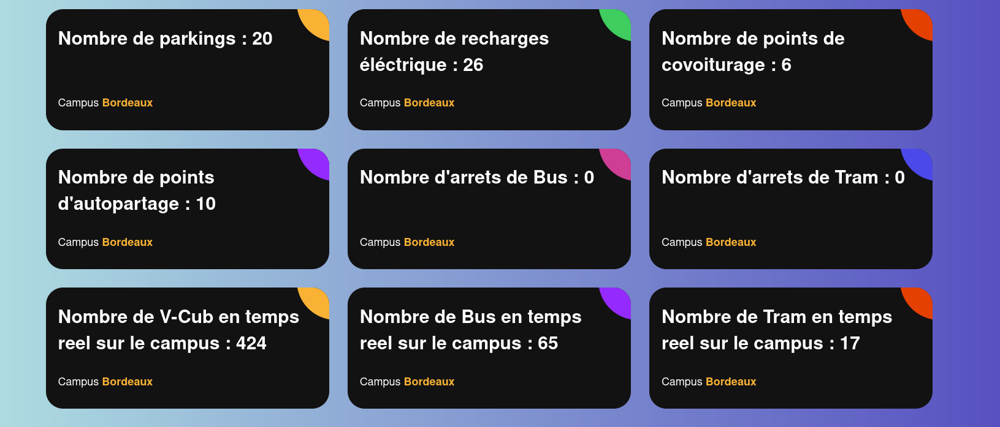
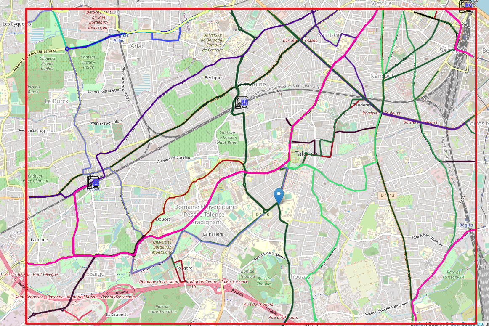
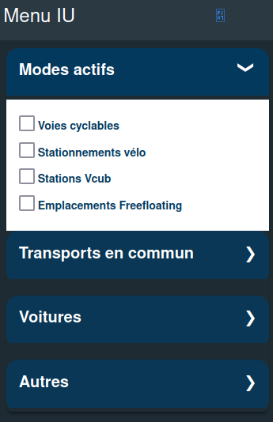
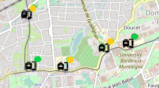
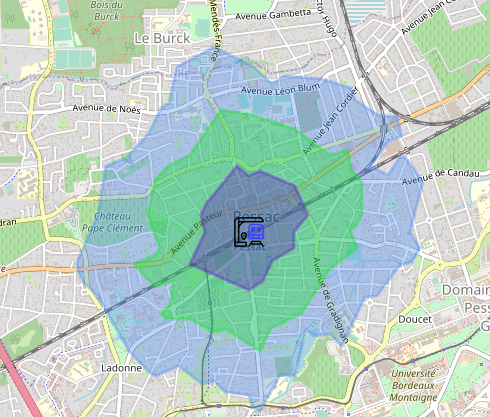
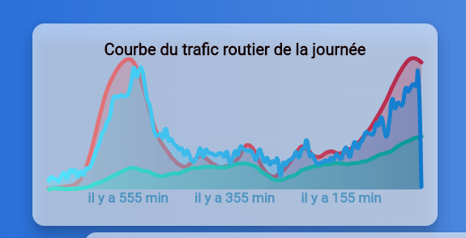
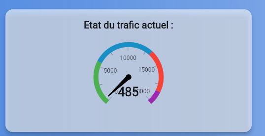
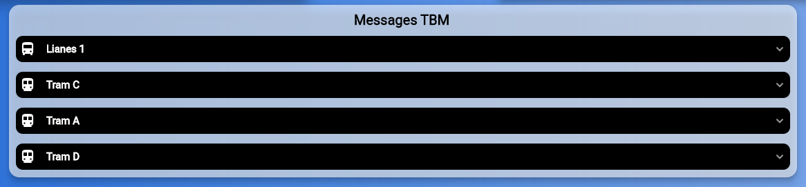

Informations générales
-
Présentation de cette page
Close
Cette page a pour vocation à servir de guide d'utilisation ainsi que de fournir des pistes de solutions en cas de problème. Vous pouvez vous rendre directement à la partie qui vous intéresse en cliquant sur le bandeau à votre gauche, ou en faisant tout simplement dérouler la page.
- Quel est l'objectif de ce site?
Avant la création de ce site, si de nombreuses informations concernant la mobilité sur le campus universitaire étant trouvables, elles étaient souvent éparpillées dans différentes sources incomplètes, et parfois même certaines inforamtions étaient tout simplement inexistantes. Cela compliquait toute initiative d'étude de ces mobilités ou de plannification d'amélioration de ces mobilités au sein du campus. Grâce à ce site, toutes ces informations sont maintenant accessibles en 1 seul clic, avec une interface graphique permettant d'appréhender rapidement et simplement ces questions de mobilité.
- Le site est-il accessible à tout moment?
Malheureusement, notre équipe ne peut vous offir pour l'instant une utilisation à tout moment. En effet, cette version du site est mise à jour tous les soirs. Ces mises à jour étant très longues, ce site sera très probablement inaccessible pendant la nuit. Rassurez-vous, notre équipe a choisir de faire cette mise à jour la nuit, vers 2 heures du matin, afin de vous garantir une utilisation optimale pendant la très grande partie de la journée, et notre équipe travaille d'arrache pied afin palier à ce défaut.
Page d'acceuil
-
Comment utiliser cette page d'acceuil?
Cette page est celle qui vous acceuille lorsque vous arrivez sur le site. Elle contient l'essentiel de ce que la plupart des utilisateurs vont utiliser. Tout d'abord, vous avez une carte du campus, avec une possibilité d'afficher différents modes de mobilité. Plus d'informations concernant cette carte sont disponibles dans la partie carte.
Une autre fonctionnalité trouvable sur la page d'acceuil est un ensemble d'informations recueillies sur la campus en direct.
Il faut faire attention bien atteindre jusqu'a ce que le chargement soit totalement complétée avant de naviguer sur d'autres pages du site afin de garantir une bonne utilisation par la suite.
-
D'où proviennent ces données présentées sur cette page et sont-elles bien à jour?
Dans le cas des données ayant un risque de changement assez faibles tels que le nombre de parkings, ces informations nous proviennent de notre base de données interne. Concernant les données en temps réél tels que le nombre de bus en temps réél, nous ne possédont pas ces informations et elles nous sont fournies par TBM et la métropole.
Carte
-
Quelle est la zone couverte dans le cadre de ce site?
Dans le cadre de ce site, le champ d'étude est concentré autour du campus universitaire de Bordeau. Ce champ d'étude s'étend jusqu'à la gare de Pessac à l'Ouest et la gare de Bordeaux Saint-Jean au Nord Est. Voici ci-dessous la zone couverte, qui est se situe dans la carré rouge.
 -
Menu déroulant de la carte

Le menu de navigation de la carte est sur votre gauche et est facile d'utilisation. Les différentes mobilités sont catégorisées en quatre grandes parties: les modes actifs(correspondant à des modes de déplacement nécessitant un effort physique), les transports commun , une catégorie regroupant les informations concernant les voitures, et une partie Autres regroupant les autres informations.
-
Que signifient les pastilles de couleurs à côté des arrêts de tram?
Ces pastilles de couleur donnent une estimation du temps d'attente avant l'arrivé du prochain tram. Une pastille verte insique que le temps d'attente est inférieur à 5 mins, une pastille orange entre 5 et 10 mins, et la pastille rouge plus de 10 mins
 -
J'ai affiché ce que vous appelez des isochrones. Que représentent-elles?
En cliquant sur n'importe quel point de la carte(par exemple un arrêt de bus, un arrêt de tram), vous avez la possibilité d'afficher ce que l'on appelle une isochrone. Elle délimite la zone que vous pouvez atteindre à partir de ce point en fonction du temps qu'il vous ait accordé, à pied ou en vélo.
Voici ci-dessus les iscochrones piétons autour de la gare de Pessac. En bleu foncé est la zone qu'il est possible d'atteindre en 5 minutes à pied, en vert en 10 minutes à pied et en bleu clair à 15 minutes en pied. Ce code couleur est le même pour les isochrones vélos.
Informations
-
Quelles sont les informations disponibles sur cette page?
Cette page offre de nombreuses informations, notamment sur la Chaire Mobilité et Transports Intelligents de Bordeaux, avec des liens utiles si vous voulez vous renseigner d'avantage sur le sujet.
Administration
-
Pour qui est cette page?
Cette page ne sera pas utile pour la majorité des utilisateurs de ce site. En effet, cette page permet avant tout de manipuler les bases de données du site.
-
Guide de l'acceuil
La première fois que l'on accède au site, le temps de chargement est très long. Cela est dû au fait que nous avons pris parti d'utiliser une véritable application afin d'assurer la sécurité de la page. Après le chargement de l'application, différentes inforamtions sont fournies.
En haut à gauche, 3 courbes sont proposées. La courbe bleue indique l'état actuel du traffic, la courbe rouge un traffic très chargé et en vert un traffic considéré comme normal.
En haut à droite se trouve une jauge qui nous permet de situer l'état du traffic routier sur Bordeaux. Plus la flèche est située à gauche, plus le traffic est considéré comme fluide, et plus elle est située à gauche, plus le traffic est considéré comme emcombré. Cette jauge est relative, c'est à dire que le traffic est fluide ou emcombré par rapport au flux normal à cet horaire?
Enfin,il y a un menu déroulant retransmettant les annonces TBM au niveau des lignes de tram.
 -
Modifications de la base de données
Tout d'abord, avant de pouvoir modifier les bases de données, vous devez vous connecter en utilisant l'icone. Ensuite, appuyez sur l'icone . Une fois cela fait, vous pouvez interagir avec les bases en cliquant sur l'icone .Toutes les bases utilisées sont alors présentées. Pour ajouter une donnée dans une base, appuyez sur le +, rentrez les informations et l'objet est créé directement dans la base de données. Il est également possible de supprimer un objet de la base en cliquant sur la "supprimer" en bas à droite de l'objet..s
-
Comment extraire des données?
Il est possible d'extraire des données en vous rendant sur l'icone
 . Ensuite, vous pouvez choisir les données que vous voulez extraire, choisissez un format, et commencez le téléchargement.
. Ensuite, vous pouvez choisir les données que vous voulez extraire, choisissez un format, et commencez le téléchargement.
- Quel est l'objectif de ce site?